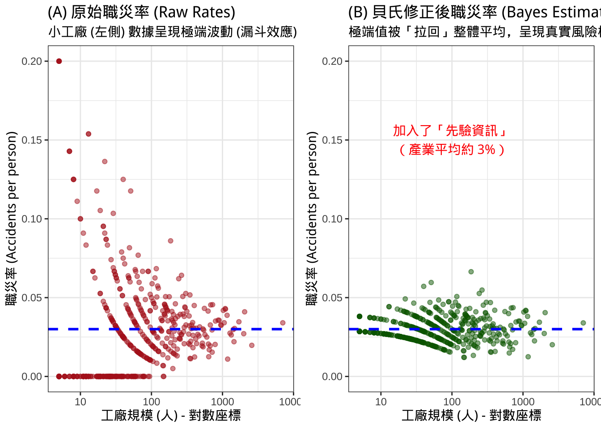
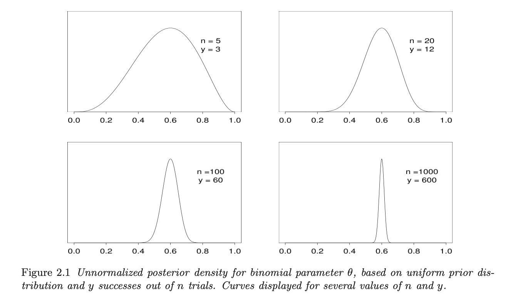
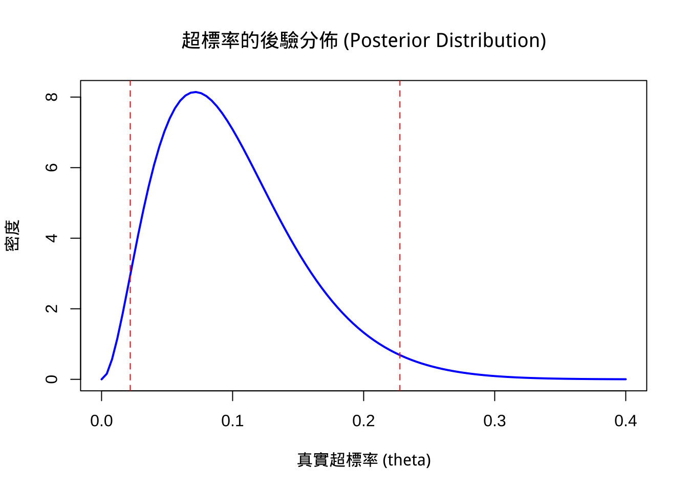

BDA3_CH2 單參數模型
date: 2026/01/04 - 2026/01/05
CH2 單參數模型
- 「貝氏統計讓我們將『過去的經驗（Prior）』與『現在的採樣數據（Data）』結合，形成對暴露風險更穩健的『新認知（Posterior）』。」
- 職業衛生（OHS）常需要在「專家經驗」與「稀少的採樣數據」之間做決策。
單參數？
使用二項式分佈（Binomial Model）來估計一系列試驗中成功(或失敗)的**比例 \theta**。透過貝氏推論，我們可以得到 \theta 的後驗分佈。
OHS 實務
- 場景： **「超標率（Exceedance Fraction）」**評估。
- 應用： 假設我們採樣了 n 個樣本，其中有 y 個樣本超過了容許濃度（OEL）。我們想知道該作業環境「真實可靠的超標機率 \theta」是多少。
- 傳統方法只看點估計（例如 10 個樣本有 1 個超標，超標率就是 10%）。
- 但，貝氏方法會給出一個機率分佈，告訴我們超標率可能落在哪些範圍（例如：雖然看到 10%，但我們有 95% 的信心認為真實超標率在 2% 到 30% 之間）。ＱＡ❓判斷–>這樣可以接受？
- Figure 2.1(右圖)展示當樣本數 n 不同時，即便比例相同，我們對 \theta 的確定程度（曲線的尖銳度）是完全不同的。(樣本越多，我們越確定)

後驗均值（Posterior Mean）是「先驗均值」與「樣本均值」的加權平均。樣本數 n 越大，數據的權重就越重。
OHS 實務
場景： 修正我們對暴露風險的看法。
應用： 假設過去經驗（Prior）告訴我們某製程很安全（超標率低），但今天採樣發現一個超標（Data）。貝氏統計不會立刻讓我們驚慌失措，而是「折衷/調和」兩者。
這在我們只有 1-2 個樣本時特別好用，避免了「0 個超標就代表風險為 0」這種危險(不科學)的結論。
關鍵觀念： 隨著採樣數據變多，過去的經驗（Prior）影響力會變小，讓數據說話。
如何用數值描述後驗分佈：均值（Mean）、中位數（Median）、眾數（Mode）以及可信區間（Credible Intervals）。
OHS 實務
場景： 撰寫暴露評估報告。
應用： 不要只給一個數字（均值）。要給出「不確定性範圍」(風險概念)。
- 95% 後驗信賴區間，可以說「我們有 95% 的把握，該勞工的暴露風險是在 多少之間」。
共軛先驗（Conjugate Prior），如 Beta 分佈對應二項式似然函數。解釋如何將「先驗知識」轉化為數學參數 \alpha 和 \beta 。
OHS 實務
- 場景： 利用「專家評估判斷」或「相似暴露群（SEG）的歷史數據」。
- 應用： 在還沒採樣前，我們作為專家已經知道某些製程（如全密閉管線）風險很低。我們可以設定一個有資訊的先驗分佈（Informative Prior）來反映這個事實。
- Beta 分佈中的 \alpha 和 \beta 可以被想像成「虛擬的成功與失敗次數」。
- 於 OHS 中的「罕見職業病」或「特殊製程安全事故」，即便數據顯示比例稍低，但因為我們有強大的背景知識（暴露致病機率或製程安全指標偏離），後驗分佈會被拉回接近實際背景值。這教導我們不要因為小樣本的極端值而過度反應。
- 用於單一觀測值或多個觀測值在常態分佈下的推論。
- 已知後驗精確度（Precision，變異數的倒數）是先驗精確度 \tau_0^2 與數據精確度\sigma^2 之和。
- OHS 實務
場景： 噪音劑量(Normal)或對數轉換後的化學品濃度（Lognormal）。
應用： 這是 AIHA 暴露評估策略的基礎模型。通常我們假設量測儀器的誤差（變異數）是已知的或可估計的，我們要推算的是勞工的平均暴露濃度。
如果採樣儀器很準（\sigma^2 小），數據說話大聲；如果專家經驗很豐富（\tau_0^2 小），專家說話大聲。
Poisson（計數資料）和 Exponential（等待時間）模型及其共軛先驗。
OHS 實務
- Poisson 分佈： 用於分析「職災事故件數」或「職業病發生數」。例如：某工廠每年發生多少次外洩？
- 透過 Gamma 先驗分佈，結合「過去十年的事故率」與「今年的事故數」，預估未來的風險。
- Exponential 分佈： 用於「可靠度工程」或「兩次事故間隔時間」。
- 評估安全防護設備（如呼吸防護具濾毒罐）的失效時間。
- Poisson 分佈： 用於分析「職災事故件數」或「職業病發生數」。例如：某工廠每年發生多少次外洩？
- 分析美國腎臟癌死亡率地圖。發現最高與最低死亡率的縣市都集中在人口稀少的區域（中西部）。這是因為樣本數小（人口少）導致變異數極大。
- OHS 實務
場景： 中小企業（SME）vs. 大型企業的職傷率比較。
我們常看到小工廠（5人）連續 3 年「零職災」，老闆就說很安全。或者小工廠發生 1 件事故，職災率馬上飆升到全台最高。
對於小工廠（樣本少），我們不能只看它自己的數據，必須「借用（Borrowing strength）」整體行業的平均值來進行貝氏修正（Shrinkage）。修正後，極端的低死亡率和高死亡率都會被拉回平均值，這才是真實的風險樣貌。
當沒有背景知識時，如何設定「客觀」的先驗分佈（如 Uniform 或 Jeffreys Prior），讓數據主導結果。
OHS 實務
場景： 面對全新的化學物質或全新製程。
應用： 當我們完全沒有文獻參考，也不敢亂猜時，我們使用無訊息先驗。
雖然聽起來很「客觀」，但在數學上可能有問題（Improper prior，無法積分至 1）。在實務上，完全的無知（Ignorance）很少見，通常我們至少知道濃度不可能小於 0 或大於 1,000,000 ppm。
不追求完全無訊息，而是設定一個範圍寬鬆但合理的先驗，目的是「正規化（Regularize）」結果，避免荒謬的極端值。
OHS 實務
場景： 現代暴露評估模型的標準做法。(推薦)
應用： 例如在 Logistic 回歸分析聽力損失風險時，我們設定係數不應過大。
「不要假裝你什麼都不知道（無訊息），也不要武斷地說你知道一切（強訊息）。設定一個『合理的物理界線』，剩下的交給數據。」
A.統計概念澄清
二項式分佈與單參數模型
當數據來自於一個大母群體中抽出的 n 次可交換試驗，且每次只有兩種可能的結果（成功/失敗）時，二項式分佈是描述這類數據最自然的數學模型。它不是硬套的公式，而是基於計數邏輯的自然推導。
二項式模型（Binomial Model）的目標是從一系列的「伯努利試驗（Bernoulli trials）」結果中，估計一個未知的母群體比例（population proportion）。
數據形式： 數據 y_1, ..., y_n 是一連串的 0 與 1。例如在 OHS 領域，1 代表「超標」，0 代表「合規」。
目標參數： 我們想知道的是 \theta（theta），即母群體中超標的比例。
模型公式：
二項式採樣模型如下：p(y|\theta) = \text{B}(y|n,\theta) = \binom{n}{y}\theta^y(1-\theta)^{n-y}, 其中 n 是總採樣數，y 是超標的總次數 。
- 唯一未知的純量或參數：在這個模型設定中，我們關注的估計量（Estimand）只有一個維度，那就是 \theta（發生的機率或比例）。
- 固定要素 (n)：總樣本數 n 被視為實驗設計的一部分，是固定的已知數，而不是需要估計的參數。
- 條件獨立性：所有的機率討論都是基於 n 已知的情況下，針對單一未知數 \theta 進行推論。
- 當我們問：「這個相似暴露群（SEG）的超標率\theta是多少？」這就是一個典型的單參數問題。我們不討論變異數、不討論測量誤差（假設已知或忽略），只專注於「超標率（Rate/Proportion）」這一個參數。
- 支撐這個模型能運作的數學與邏輯原理，在於**「可交換性（Exchangeability）」**。
- 由於可交換性，數據的所有資訊都可以被濃縮（Summarized）在「總超標次數 y」裡面。二項式分佈正是基於 n 和 y 建立的。這意味著，只要知道 n 次中有 y 次超標，我們就擁有了推斷 \theta 所需的全部數據資訊，這在科學上是非常高效且合理的。
- 定義： 如果我們對數據的順序沒有任何額外資訊（例如我們不知道這是週一還是週五採樣的，或者無法區分樣本之間的差異），我們就判斷這些試驗是「可交換的」。（假設無自相關，前後樣本是獨立的）
- 推論： 因為具有可交換性，數據的詳細順序（例如「超標、合規、合規」vs「合規、合規、超標」）並不重要，重要的是「總共出現幾次超標 (y)」。
- 轉化為機率： 可交換性讓我們可以將問題轉化為「獨立同分佈（Independent and Identically Distributed, i.i.d.）」的隨機變數，並用參數 \theta 來代表每次試驗成功的機率。
- 從 1763 年 Thomas Bayes 發表的論文開始，二項式模型就是貝氏推論的起點。透過結合先驗分佈（如 Uniform [0,1]），我們可以利用貝氏定理： p(\theta|y) \propto \theta^y(1-\theta)^{n-y}
- 算出 \theta 的後驗分佈。這讓我們能科學地量化對參數 \theta 的不確定性（例如：超標率 \theta 有 95% 的機率落在 0.05 到 0.15 之間），而不僅僅是給出一個點估計值。
- 只要我們的採樣是隨機的（可交換性），不管採樣順序為何，我們只需要關心『採了幾個樣本 (n)』以及『超標了幾次 (y)』。因為樣本數 n 是我們決定的（固定的），剩下的唯一未知數就是『真實的超標率 (\theta)』，這就是為什麼它叫單參數模型。利用這個模型，我們就能算出該作業環境真實超標風險的機率分佈，而不只是看到表面的超標次數。」
B.共軛（Conjugacy）
- 貝氏統計在實務上（特別是早期計算能力不足時）能被廣泛應用的關鍵。
- 在貝氏定理中，我們有以下關係：
\text{後驗分佈 (Posterior)} \propto \text{似然函數 (Likelihood)} \times \text{先驗分佈 (Prior)}
- 所謂的「共軛（Conjugate）」，指的是一種「數學上的門當戶對」。
- 當我們的數據模型（似然函數）是 二項式分佈 (Binomial) 時，如果我們選擇 Beta 分佈 作為先驗分佈，那麼算出來的 後驗分佈，依然會是 Beta 分佈。
「這就像是遺傳學。如果你選擇 Beta 家族當『先驗（父母）』，而你的採樣數據是二項式類型，那麼生出來的『後驗（孩子）』，保證還是 Beta 家族的成員，只是長相（參數）稍微變了。這種特性就叫共軛。」
- 因為 Beta 分佈具有兩個完美的特性，非常適合處理「機率」或「比率」問題。
A. 數學結構的吻合 (Mathematical Convenience)
- 二項式似然函數的長相是：\theta^y (1-\theta)^{n-y} 。
- Beta 先驗分佈的長相是：\theta^{\alpha-1} (1-\theta)^{\beta-1} 。
- 當兩者相乘時，底數 \theta 和 (1-\theta) 是一樣的，我們只需要把指數相加即可。這讓數學運算變得極其簡單，不需要複雜的微積分積分。
B. 物理意義：它定義在 [0, 1] 區間
- 在 OHS 中，我們關心的「超標率」、「患病率」或「防護具失效機率」，數值一定介於 0% 到 100% 之間。
- Beta 分佈的定義域剛好就是 [0, 1]，天生就是用來描述「機率的機率分佈」。
- 此外，Beta 分佈形狀非常有彈性。它可以是平坦的（代表無知）、鐘形的（代表確定）、或是偏向一邊的（代表高風險或低風險），足以涵蓋我們所有的專家經驗或先驗資料。
- 它讓貝氏統計變得「可操作」且「直觀」，計算變得像小學加法一樣簡單。
- 因為共軛性，我們不需要做積分。更新知識（從先驗變後驗）只需要更新 Beta 的兩個參數 (\alpha, \beta)：
- 先驗 (Prior)： \text{Beta}(\alpha, \beta)
- 數據 (Data)： n 個樣本中有 y 個超標，n-y 個合規。
- 後驗 (Posterior)： \text{Beta}(\alpha + y, \beta + n - y) 。
- 假設我們先驗認為製程超標率分佈是 \text{Beta}(2, 20)（代表我們覺得大概率安全）。
- 今天採樣 5 個點，發現 1 個超標 (y=1, n=5)。
- 新的後驗分佈就是 \text{Beta}(2+1, 20+4) = \text{Beta}(3, 24)。就這麼簡單，不用電腦也能算！
- 參數具有極強的「可解釋性」 (Interpretability)，在 Beta-Binomial 模型中，先驗參數 \alpha 和 \beta 可以被解釋為「虛擬的數據 (Pseudo-counts)」。
- \alpha - 1 可以看作是「過去經驗中累積的超標次數」。
- \beta - 1 可以看作是「過去經驗中累積的合規次數」。
- \alpha + \beta - 2 相當於我們過去累積的樣本總數（證據強度）。
- 連續更新 (Sequential Updating)：今天的後驗分佈，可以直接當成明天的先驗分佈。因為形式永遠是 Beta 分佈，我們可以隨著每天新的採樣數據進來，不斷地用加法更新 \alpha 和 \beta，讓風險評估模型越來越準確。
- 為什麼我們要用 Beta 分佈來配合二項式採樣？
- 因為它算得快： 只要會加法就能算出新的風險分佈（後驗），不需要跑複雜的電腦程式。
- 因為它聽得懂： Beta 的參數可以直接翻譯成『過去我們看過多少次超標、多少次合格』，這讓『專家經驗』或先驗資訊可以量化並加入計算。
- 因為它合邏輯： 它保證算出來的機率永遠在 0 到 1 之間，符合物理現實。
- 在二項式模型中，只要算出了後驗 Beta 分佈的兩個參數 \alpha_{new}（新的 \alpha）與 \beta_{new}（新的 \beta），您就擁有了關於該參數 \theta（例如：超標率）的「完整資訊」。不需要回頭去翻原始數據，所有的知識都濃縮在這兩個數字裡了，這正是貝氏統計配合共軛分佈（Conjugate Distributions）最強大的地方。
- 情境： 您有一個先驗認為超標率很低 (\alpha=1, \beta=19，約 5%)。
- 數據： 採樣 10 個點，發現 2 個超標 (y=2, n=10)。
- 後驗參數： \alpha_{new} = 1+2 = 3, \beta_{new} = 19+8 = 27。
[1] "後驗平均超標率: 10.0%"[1] "95% 可信區間: [2.2%, 22.8%]"
- 留意事項：
- 最高後驗密度區域 (Highest Posterior Density, HPD)： 這是包含 95% 機率且密度最高的區域。當分佈極度歪斜（例如超標率極低，堆在 0 附近）時，HPD 可能比中央區間更準確，但在單參數模型且樣本數稍多時，兩者差異通常不大 。
- 在職業衛生法規遵循判斷上，我們有時更關心「上限（如ＯＥＬ）」。這時可以計算 95% 上限（即
qbeta(0.95, ...)），這樣可以回答：「我們有 95% 的信心，超標率不會超過**多少？」這在保守的風險評估中非常有用。
C.拉普拉斯預測
- Laplace’s Law of Succession提供了一種簡單卻強大的方法，來解決傳統統計在小樣本下容易做出「過度武斷」結論的問題。
- 當我們想預測「下一次採樣（\tilde{y}）」是否會超標時，我們不直接使用傳統的比例 \frac{y}{n}，而是使用以下公式：
核心公式 E(\theta|y) = \frac{y+1}{n+2} , 或 P(\tilde{y}=1 | y) = \frac{y+1}{n+2}
- y：目前觀測到的超標次數（或事件發生次數）。
- n：目前的總樣本數。
- 1 與 2：這是貝氏修正項（來自均勻先驗分佈，也就是 \text{Beta}(1, 1)）。
\text{Beta}(1, 1) 意味著在還沒開始採樣前，我們先「虛擬地」假設已經有 2 次試驗：一次成功（超標），一次失敗（合規）。
這代表我們先驗認為「超標率」在 0 到 1 之間是均勻分佈的，沒有偏向任何一邊。
- 後驗預測參數均值（Posterior Predictive Mean）即為 \frac{y+1}{n+2} 。
在職業衛生中，我們最怕的情況是：「採樣 3 次都沒超標，老闆就以為這裡絕對安全。」
傳統統計 (Maximum Likelihood, MLE)：
- 若 n=3, y=0 \rightarrow 超標率 = 0/3 = 0\%。
- 結論： 風險為零。這在小樣本下是極度危險的誤導。
拉普拉斯預測：
若 n=3, y=0 \rightarrow 下一次超標機率 = \frac{0+1}{3+2} = \frac{1}{5} = 20\%。
結論： 雖然目前沒看到超標，但我們保留了 20% 的可能性，認為下次可能會超標。
情境 A：小樣本的ＥＡ1
- 狀況： 某新製程剛運作，您進行了 5 次 空氣採樣，結果 0 次 超標。超標風險真的是 0 嗎？
- 拉普拉斯解讀： P(\text{下次超標}) = \frac{0+1}{5+2} = \frac{1}{7} \approx 14.3\%
- 合理推論：「雖然我們測了 5 次都合格，但因為樣本數太少，統計上我們不能說風險是零。依據貝氏法則保守估計，下一次採樣仍有約 14% 的機率可能超標。因此，我們建議維持目前的防護具等級與控制措施，直到累積更多數據為止。」
情境 B：小樣本的ＥＡ2（避免過度反應）
- 狀況： 某工廠發生 2 次 意外洩漏，您剛好去測了 2 次，結果 2 次 都超標。 該工廠是否「百分之百」沒救了？
- 拉普拉斯解讀： P(\text{下次超標}) = \frac{2+1}{2+2} = \frac{3}{4} = 75\%
- 傳統算法會說這裡 100% 不合格 (\frac{2}{2})，這可能太過悲觀。拉普拉斯法則告訴我們，預測下一次超標的機率是 75%。這意味著雖然現況很糟，但並非毫無改善或出現合格樣本的機會（還有 25% 的合規空間），我們需要更多調查，但現在就應該採行些控制措施。」
平滑化（Smoothing）： 拉普拉斯預測就像把數據「磨圓」了一點。它避免讓機率變成極端的 0 或 1。
保守原則： 在安全衛生領域，當證據不足（樣本少）時，我們寧可高估風險（從 0% 變成 20%），也不要低估風險，這符合 OHS 的預防原則。
隨著樣本增加 (n \to \infty)：當 n 變得很大時（例如 n=1000, y=100），\frac{101}{1002} \approx 10.08\% 與 \frac{100}{1000} = 10\% 幾乎沒有差別。
這體現了貝氏統計的核心精神——當數據少時，先驗知識（這裡是保守的 50/50 假設）幫助我們穩定預測；當數據多時，就讓數據說話。
拉普拉斯連鎖律（Laplace’s Law of Succession）」。它解決了傳統頻率學派（\frac{y}{n}）在預測未來單次試驗時最致命的缺陷：「零機率陷阱」與「過度自信」。
- 又稱為「貝氏後驗平均估計（Bayesian Posterior Mean Estimate）」。
- 核心公式： E(\theta|y) = \frac{y + \alpha}{n + \alpha + \beta}
- 在職業衛生實務中，我們有時並不是一無所知（Uniform），我們可以使用「廣義的拉普拉斯預測」（即一般化的貝氏更新）。
- 情境： 假設過去經驗告訴我們，這類製程通常被穩定控制，大概測定 20 次才會有 1 次超標。
- 設定先驗： 我們可以設 \text{Beta}(1, 19)。
- \alpha=1 (虛擬超標 1 次)
- \beta=19 (虛擬合規 19 次)
- 先驗平均風險 = 1/(1+19) = 5\%。
- 新數據： 現場採樣 5 次，0 次超標 (y=0, n=5)。
- 預測公式就變成了：\frac{y + \alpha}{n + \alpha + \beta} = \frac{0 + 1}{5 + 1 + 19} = \frac{1}{25} = 4\%
- 「先驗選擇」對「預測結果」的影響，展示如下表：（假設採樣結果皆為：n=5 次採樣，y=0 次超標）
| 預測方法 | 先驗假設 (Prior) | 計算公式 | 預測下一次超標機率 | OHS 意義 |
| 傳統統計 (MLE) | 無 (完全看數據) | \frac{y}{n} | \frac{0}{5} = \mathbf{0\%} | 極度危險：宣稱零風險，忽視採樣誤差。 |
| 拉普拉斯預測 | 均勻先驗 Beta(1,1) (假設超標/合規機會均等) |
\frac{y+1}{n+2} | \frac{1}{7} \approx \mathbf{14.3\%} | 最保守/防禦性：當我們對現場完全陌生時使用。 |
| 廣義貝氏預測 | 訊息先驗 Beta(1,19) (依據過去經驗認為風險低) |
\frac{y+1}{n+20} | \frac{1}{25} = \mathbf{4.0\%} | 折衷/合理：結合了「現場好紀錄」與「專家經驗」。 |
後驗機率分佈
1. 決策指標
- 理想情況下，我們應該報告整個後驗機率分佈 p(\theta|y)，因為它包含了關於參數的所有資訊 。但在實務上，我們需要各種「數值摘要（Numerical Summaries）」來溝通。
- 管理者往往只想知道兩個問題：1. 最可能的暴露濃度是多少？（點估計），2. 你有多大的把握？（區間估計）」
- 位置的摘要：點估計 (Summaries of Location)
- 均值 (Mean)： 後驗期望值 E(\theta|y) 。
- 代表「長期平均風險」。在 Beta 分佈範例中，均值為 \frac{y+\alpha}{n+\alpha+\beta} 。這是做累積暴露評估時最常用的指標。
- 中位數 (Median)： 50% 的分位數。
- 當數據有極端值（如突然的一次洩漏）導致分佈歪斜時，中位數比均值更穩健（Robust）。
- 眾數 (Mode)： 機率密度最高的點，即「最可能的值」。
- 在 Beta 分佈中，眾數是 \frac{y}{n}（即 MLE），這代表「當下最可能發生的狀況」。
- 均值 (Mean)： 後驗期望值 E(\theta|y) 。
- 不確定性的摘要：區間估計 （通常報告 95% 區間）
- 中央後驗區間 (Central Posterior Interval)
- 定義： 直接取後驗分佈的 2.5% 和 97.5% 分位數，中間的範圍包含了 95% 的機率 。可以說成：『我們有 95% 的信心，真實的暴露風險是落在 X 與 Y 之間。』
- 最高後驗密度區域 (Highest Posterior Density Region, HPD)
- 定義： 這是包含 95% 機率的「最短」區間，且區間內所有點的機率密度都高於區間外 。
- 與中央區間的差異： 如果分佈是對稱單峰的，HPD 與中央區間是一樣的 。但如果分佈嚴重歪斜，HPD 會更短、更精確。
- 特別適用於暴露濃度呈現雙峰分佈時。
- 中央後驗區間 (Central Posterior Interval)
- 位置的摘要：點估計 (Summaries of Location)
善用區間： 永遠不要只給一個數字（點估計），一定要附上貝氏可信區間（Uncertainty），這是專業的表現 。
D.訊息先驗分佈
- 當我們對參數 \theta 不是一無所知，而是有一些背景知識時，該如何構建先驗分佈，以及這會如何影響最終的推論。
Gelman 首先探討了我們為什麼可以設定先驗分佈，提出了兩種哲學觀點 1：
母群體解釋 (Population Interpretation)：
先驗分佈代表一個真實存在的「母群體」。
- OHS 例子： 您要評估某個新工廠的職災率。您的先驗分佈可以來自「全台灣同類型工廠過去十年的職災率分佈」。這是有實體數據支持的。
知識狀態解釋 (State of Knowledge Interpretation)：
先驗分佈代表我們主觀的「不確定性」與「信念」。
- OHS 例子： 針對一個全新的化學製程，沒有歷史數據。但依據您的毒理學知識與工程控制原理，您「判斷」其洩漏風險應該很低。這種「專家判斷」就是先驗。
為了讓計算方便（有封閉解），選擇與似然函數（二項式）形狀相似的先驗(即 Beta 分佈)共軛 。
似然函數 (Likelihood): \theta^y (1-\theta)^{n-y}
先驗分佈 (Prior): \text{Beta}(\alpha, \beta) \propto \theta^{\alpha-1} (1-\theta)^{\beta-1}
後驗分佈 (Posterior): \text{Beta}(\alpha+y, \beta+n-y)
\alpha - 1：代表我們先驗認為已經發生過的「成功（超標）次數」。
\beta - 1：代表我們先驗認為已經發生過的「失敗（合規）次數」。
共軛的便利性： 我們只要把「已有資訊的次數（先驗）」加上「實際看到的次數（數據）」，就是「新的認知（後驗）」，這讓後驗分佈具有高度的可解釋性。
後驗均值公式：E(\theta|y) = \frac{\alpha+y}{\alpha+\beta+n}
這個公式可以改寫為加權平均的形式，權重取決於「先驗的強度」與「數據的樣本數」。
如果 \alpha+\beta（先驗的樣本數）很大，代表專家非常固執（或經驗非常豐富），那麼新的數據 n 必須很大才能改變專家的看法。
隨著 n \to \infty，先驗的影響力會歸零，結果完全由數據決定。
可以使用不同強度的先驗來進行敏感度分析 (Sensitivity Analysis)
如果我們的知識形狀很奇怪，Beta 分佈描述不了怎麼辦？（例如：我們認為超標率要嘛是 0，要嘛大於 10%，不可能是中間值）。
方法： 使用網格法 (Grid approach) :
步驟：
把 \theta 切成很多小格子（如 0.00, 0.01, …, 1.00）。
算出每一格的先驗機率 p(\theta)。
算出每一格的似然機率 p(y|\theta)。
相乘並標準化，得到後驗分佈。
結論： 即使沒有漂亮的數學公式（共軛），電腦也能幫我們暴力算出結果，這在現代非常容易實現。
當樣本數夠大時，後驗分佈會趨近於常態分佈。(中央極限定理)
在OHS 實務上， 為了讓近似更準確，建議對 \theta 進行 Logit 轉換 (\log(\frac{\theta}{1-\theta}))，將範圍從 [0,1] 拉展到 (-\infty, \infty)，這樣更符合常態分佈的鐘形曲線特性。
不要浪費你的專業： 你可以透過設定 \alpha 和 \beta（共軛先驗），把『這製程通常很安全』這種模糊的概念，轉化為數學上的『虛擬合規次數』，加入模型運算。
數據越多，專家越不重要： 當你採樣了幾百個點之後，先驗設定是多少已經不重要了，數據會說話。
敏感度分析： 如果你不確定先驗該設多少，就試試看不同的設定（如书中的 Table 2.1）。如果結果都差不多，你的結論就是穩健的。」
E.已知變異數的常態分佈
Normal distribution with known variance（已知變異數的常態分佈）適用在職業衛生（OHS）與儀器分析領域是非常基礎且實用的模型，特別是當我們使用的測量設備具有已知的精確度（Known Precision）時。
我們要做的是：『已知儀器誤差下的平均值推估』。
在標準的常態分佈 N(\theta, \sigma^2) 中，通常有兩個未知參數：平均值 \theta 和變異數 \sigma^2。
如果做出了一個關鍵假設：變異數 \sigma^2 是已知的（Known）。如果 \sigma^2 被視為常數，模型中剩下唯一需要估計的未知數就只有 平均值 \theta。因此，這依然符合「單參數模型（Single-parameter models）」的定義。
例如使用直讀式儀器（PID, FID）或噪音計，儀器原廠規格書通常會告知「測量誤差（儀器精確度）」。我們可以將這個誤差視為已知的 \sigma^2，專心去推估環境中真實的「平均暴露濃度 (\theta)」即可。
在貝氏統計的常態模型中，不用變異數（Variance, \sigma^2），常用它的倒數—精確度（Precision, 1/\sigma^2 ＝\tau_0^2)）。
共軛：當我們有一個常態先驗 N(\mu_0, \tau_0^2) 和一組常態數據 y（已知變異數 \sigma^2）時，算出來的後驗分佈依然是常態分佈 N(\mu_n, \tau_n^2) 。
後驗參數的更新法則：
後驗精確度 = 先驗精確度 + 數據精確度. \frac{1}{\tau_n^2} = \frac{1}{\tau_0^2} + \frac{n}{\sigma^2}
- 信心（精確度）是累加的。每多採一個樣，你的信心就增加一份（1/\sigma^2）。
後驗平均值 = 加權平均 (Weighted Average)
\mu_n = \frac{\frac{1}{\tau_0^2}\mu_0 + \frac{n}{\sigma^2}\bar{y}}{\frac{1}{\tau_0^2} + \frac{n}{\sigma^2}}
- 新的估計值 (\mu_n) 是「舊信念 (\mu_0)」與「新數據 (\bar{y})」的加權平均。權重就是各自的精確度。誰的變異數小（精確度高），誰說話就大聲，結果就往誰那邊靠。
情境：評估勞工的真實噪音暴露量
已知條件 (\sigma^2)： 我們使用的噪音計經過校正，原廠手冊說測量標準差是 \sigma = 2 dB（即變異數 \sigma^2 = 4）。這是已知的。
未知參數 (\theta)： 勞工真實的長期平均暴露分貝數。
先驗 (\mu_0, \tau_0^2)： 根據過去對該製程的了解，我們認為平均暴露大概在 85 dB，但不太確定，所以給一個較寬的變異數 \sigma^2 = 16（即標準差 4 dB）。
- 先驗分佈： N(85, 16)
數據 (n, \bar{y})： 我們測量了 n=4 次，平均值是 \bar{y} = 90 dB。
貝氏運算：
先驗精確度： 1/16 = 0.0625
數據精確度： 4 \times (1/4) = 1.0 （因為測了 4 次，每次精確度 0.25）
誰說話大聲？ 數據精確度 (1.0) 遠大於先驗精確度 (0.0625)。
後驗結果： 估計值會被強力拉向數據的 90 dB，稍微被先驗的 85 dB 拉回去一點點。
- 計算： \mu_n = \frac{0.0625 \times 85 + 1.0 \times 90}{0.0625 + 1.0} \approx 89.7 \text{ dB}
- 結論：雖然先驗認為是 85 dB，但因為儀器很準（\sigma 小）且測了 4 次，證據確鑿，所以我們修正看法，認為真實暴露約為 89.7 dB 6。
如果我們要預測「下一次測量 (\tilde{y}」會是多少？
結果也是常態分佈，但變異數包含兩部分：
\text{預測變異數} = \sigma^2 + \tau_1^2
\sigma^2 (Aleatoric uncertainty)： 這是物理世界的隨機性（儀器本身的誤差），你測再多次也消除不了。
\tau_1^2 (Epistemic uncertainty)： 這是我們對 \theta 認知的不確定性。隨著樣本 n 增加，這部分會趨近於 0。
為什麼叫單參數？因為我們假設儀器的誤差（\sigma）是已知的常數，只專心猜測環境的真實濃度（\theta）。
如果你的儀器很爛（\sigma 大），或是採樣數很少（n 小），貝氏公式會自動叫你多聽聽專家經驗（Prior）。
如果你的儀器很準，或者你測了很多次，貝氏公式就會叫你相信數據，把專家經驗放一邊。
這就是完全自動化的權重分配系統。
F.廣泛的單參數暴露風險模式
在職業衛生（OHS）的應用不被侷限在「二項式（超標/合規）」與「常態（平均濃度）」這兩個框架裡。
Other standard single-parameter models：在現實工廠中，我們還有兩類極其重要的數據：
計數數據（Counts）：今年發生了幾次洩漏？幾個人得了職業病？（這是整數，不是連續的濃度）。
時間數據（Waiting Times）：這個濾毒罐還能撐多久？下次故障或發生火災可能是多久以後？（這是時間，且必須大於 0）。
以下這介紹 Poisson（卜瓦松）分佈 與 Exponential（指數）分佈 ，它們讓我們能處理更廣泛的單參數風險問題。
這是 OHS 流行病學與事故分析的核心模型 。適用場景：
當我們計算一定時間或空間內的稀有事件次數時。
例： 全廠每年的職傷件數、某製程每年的氣體外洩次數、健檢中發現的第三級人數。
模型架構：
先驗： y_i \sim \text{Poisson}(x_i \theta) 。
y_i：事故件數。
x_i：暴露量（Exposure），在 OHS 中通常指「總工時（Man-hours）」或「受雇人數」。
\theta：真正的風險率（例如：每百萬工時的事故率）。
似然函數 (Likelihood)： p(y|\theta) \propto \theta^{y} e^{-n\theta} 。這裡 \theta 代表發生率（Rate）。
共軛先驗 (Conjugate Prior)： Gamma 分佈 (\alpha, \beta) 。
- \alpha 代表過去觀察到的總事故數，\beta 代表過去觀察的總時間（或人時）。
後驗分佈 (Posterior)： 依然是 Gamma 分佈。
\theta|y \sim \text{Gamma}(\alpha + \sum y, \beta + n)
- 新的 \alpha = 舊事故 + 新事故；新的 \beta = 舊時間 + 新時間。
實例： 「氣喘死亡率」。
- 假設某城市 20 萬人中有 3 人死於氣喘。若我們有過去的世界平均數據（先驗），就可以結合這單一年度的數據，算出該城市真實的潛在死亡率。這完全可以直接套用在「工廠職業病發生率」的估算上。
處理「壽命」與「時間間隔」，這是可靠度工程（Reliability Engineering）與防護具管理的基礎。
適用場景：當我們關注「要等多久事件才會發生」（Waiting times）或「存活時間」時。
- OHS 例子： 呼吸防護具濾罐的破出時間（Breakthrough time）、安全閥兩次故障的間隔時間、感測器失效前的運作時數。
模型架構：
似然函數 (Likelihood)： p(y|\theta) = \theta \exp(-y\theta) 。這裡 \theta 是「速率（Rate）」，即壽命的倒數。
特性： 無記憶性（Memoryless）。這意味著如果一個零件現在沒壞，它未來的故障機率跟它已經用了多久無關（這適用於隨機失效，雖不完全適用於老化磨損，但常用作基礎模型）。
共軛先驗 (Conjugate Prior)： Gamma 分佈 (\alpha, \beta) 。
後驗分佈 (Posterior)： Gamma 分佈。
\theta|y \sim \text{Gamma}(\alpha + n, \beta + \sum y)
- 這裡的 \beta 更新是加上「總等待時間（\sum y）」。
OHS 應用：
「如果你想估算工廠泵浦平均多久壞一次（MTTF），但你只觀察到 5 次故障數據。利用 Exponential 模型加上 Gamma 先驗（參考原廠數據），你可以算出比單純平均值更準確的故障率，從而制定更好的維修保養計畫。」
- (Normal with known mean, unknown variance)，這是一個比較特殊的單參數模型，通常用於「儀器校正」或「品質控制」。
適用場景：我們已知中心點（平均值 \theta），但想知道「變異程度（\sigma^2）」有多大。
- OHS 例子： 我們買了一個標準氣體（已知濃度 \theta = 100 ppm），用新的檢測儀器測了 10 次。我們想估算這台新儀器的「精確度/穩定性」（即估計 \sigma^2）。
模型架構：
共軛先驗： 反卡方分佈 (Inverse-\chi^2) 或 反伽瑪分佈 (Inverse-Gamma) 。
後驗分佈： 依然是 反卡方分佈 。
- 新的估計變異數，會是「先驗變異數」與「數據變異數」的加權平均。
Negative Binomial，適合於卜瓦松的預測分佈
概念： 如果數據來自 Poisson 分佈，而其參數 \theta 本身又有不確定性（Gamma 分佈），那麼這些數據的邊際分佈（Marginal Distribution）就是負二項式分佈。
OHS 意義：Poisson 假設變異數等於均值（Mean = Variance）。但在真實的職災數據中，往往有「過度離散（Overdispersion）」現象（即變異數 > 均值，例如某年突然發生化工廠大爆炸或局限空間職災）。這時，使用 Negative Binomial 作為預測模型會比 Poisson 更穩健（Robust），因為它允許數據有更大的波動範圍。
在教學時，您可以用這張表總結知道何時該用什麼工具：
| 數據類型 | OHS 應用問題 (範例) | 推薦模型 (Likelihood) | 搭配的先驗 (Prior) |
| 二項 (0/1) | 超標了嗎？合規嗎？ | Binomial (二項式) | Beta |
| 連續數值 (濃度) | 平均暴露濃度是多少？ | Normal (常態) (已知變異數) |
Normal |
| 計數 (整數) | 今年發生幾件職災？幾次外洩？ | Poisson (卜瓦松) | Gamma |
| 時間 (大於0) | 設備多久會失效？濾罐能撐多久？ | Exponential (指數) | Gamma |
| 連續數值 (誤差) | 這台儀器穩不穩定 (變異數)？ | Normal (已知平均值) |
Inverse-Gamma (反伽瑪) |
| 你的數據類型 | OHS 應用問題 (範例) | 推薦模型 (Likelihood) | 搭配的先驗 (Prior) | 算出來的後驗 (Posterior) | 後驗更新 |
| 二元 (0/1) | 超標了嗎？合規嗎？ | Binomial (二項式) |
Beta (貝塔) |
Beta (貝塔) |
次數相加： 新\alpha = 舊\alpha + 超標數 新\beta = 舊\beta + 合格數 |
連續數值 (濃度) |
平均暴露濃度是多少？ | Normal (常態) (已知變異數) |
Normal (常態) |
Normal (常態) |
加權平均： 新平均值是「舊平均」與「數據平均」的加權折衷 |
計數 (整數) |
今年發生幾件職災？ 幾次外洩？ |
Poisson (卜瓦松) |
Gamma (伽瑪) |
Gamma (伽瑪) |
累加事故： 新\alpha = 舊事故數 + 新事故數 新\beta = 舊觀察時間 + 新時間 |
時間 (大於0) |
設備多久會失效？ 濾罐能撐多久？ |
Exponential (指數) |
Gamma (伽瑪) |
Gamma (伽瑪) |
累加壽命： 新\alpha = 舊觀察數 + 新觀察數 新\beta = 舊總時間 + 新總時間 |
連續數值 (誤差) |
這台儀器穩不穩定？ (變異數) |
Normal (常態) (已知平均值) |
Inverse-\chi^2 (反卡方) 或 Inv-Gamma |
Inverse-\chi^2 (反卡方) 或 Inv-Gamma |
自由度累加： 新自由度 = 舊自由度 + 樣本數 新變異 = 加權平均 |
『先驗』和『後驗』分佈一致。
- 共軛性：這意味著我們不需要做複雜的微積分。如果你的先驗是 Beta 分佈（例如你假設超標率 5%），只要加上新的數據，你的後驗保證還是 Beta 分佈，只是形狀變了（例如變成超標率 8%）。這讓我們可以不斷地隨著新數據更新風險模型，而不會讓模型變得越來越複雜。」
「更新就是做加法」
想算新的超標率分佈？把『看到的超標次數』加到先驗參數上。
想算新的職災率分佈？把『看到的職災件數』加到先驗參數上。
所以，不要被『貝氏機率』這個名詞嚇到，它骨子裡就是一個非常直觀的累加器，幫你把過去的經驗（先驗）和現在的數據（Likelihood）加在一起而已。」
G.貝氏推論：各縣市營造業職災死亡率評估
1. 問題背景：地圖上的假象 (The Problem)
分析台灣職災最高\最低職災率都集中在人口稀少的縣市。
連江縣 (馬祖) 的困境： 勞工人數極少（假設約 3,000 人）。
如果今年 0 人 死亡，死亡率是 0（全台最低）。
如果今年不幸 1 人 死亡，死亡率是 1/3000 = 33.3 (每十萬人)。
新北市的穩定： 勞工人數極多（假設約 200 萬人）。
- 平均每年約 60 人死亡，死亡率約 3.0 (每十萬人)。
傳統統計的誤導：
- 如果您只看「原始死亡率 (\frac{y}{n})」，您會發現全台「最危險」和「最安全」的縣市，永遠都是離島或人口少的縣市（如澎湖、金門、連江）。但這不是因為那裡真的特別危險或安全，純粹是因為樣本數 (n) 太小，變異數太大。
2. 建立貝氏模型 (The Model)
我們使用貝氏方法來修正這個問題。
假設模型 (Likelihood)：
假設第 j 個縣市的死亡人數 y_j 服從卜瓦松分佈：y_j \sim \text{Poisson}(n_j \theta_j)
其中 n_j 是該縣市勞工人數，\theta_j 是我們想知道的「真實潛在死亡率」。
建立先驗 (Prior)：
我們需要一個「全國平均標準」作為基準。利用 Gamma 分佈（卜瓦松的共軛先驗）。
假設根據過去十年全台數據，營造業平均死亡率約為 每十萬人 4 人 (\theta \approx 4 \times 10^{-5})。
我們設定先驗分佈為 \text{Gamma}(\alpha=20, \beta=500,000)（這裡的數字是為了湊出平均值 20/500,000 = 4 \times 10^{-5}，且 \alpha=20 代表我們給予這個先驗約等於 20 個死亡案例的權重，相當穩健）。
3. 貝氏推論結果
數據修正 (The Posterior Results)：後驗分佈為：
- \theta_j | y_j \sim \text{Gamma}(\alpha + y_j, \beta + n_j)
後驗平均值（修正後的死亡率）為：
- E(\theta_j | y_j) = \frac{20 + y_j}{500,000 + n_j}
案例 A：人口少的「離島縣」 (Small Population)
情境： 勞工 n_j = 5,000 人。
狀況 1 (運氣好)： 今年 0 人 死亡 (y_j=0)。
原始率： 0 (看似超安全)。
貝氏修正： \frac{20 + 0}{500,000 + 5,000} \approx \frac{20}{505,000} \approx \textbf{3.96} \text{ (每十萬人)}。
解讀： 雖然沒死人，但模型知道你只是人少運氣好，真實風險被拉回接近全國平均 (4.0)。
狀況 2 (運氣差)： 今年 1 人 死亡 (y_j=1)。
原始率： 1/5,000 = \textbf{20.0} (每十萬人)。驚人的高！是全國平均的 5 倍！
貝氏修正： \frac{20 + 1}{500,000 + 5,000} \approx \frac{21}{505,000} \approx \textbf{4.16} \text{ (每十萬人)}。
解讀： 模型知道這 1 人死亡在小樣本中可能是偶然，因此將極端值 20.0 強力「收縮 (Shrinkage)」回 4.16 7。縣市管理者不會因為這單一事件被冤枉成「績效極差」。
案例 B：人口多的「直轄市」 (Large Population)
情境： 勞工 n_j = 1,000,000 人 (100萬人)。
狀況： 今年 40 人 死亡 (y_j=40)。
原始率： 40/1,000,000 = \textbf{4.0} (每十萬人)。
貝氏修正： \frac{20 + 40}{500,000 + 1,000,000} = \frac{60}{1,500,000} = \textbf{4.0} \text{ (每十萬人)}。
解讀： 對於大縣市，數據量 (n_j) 夠大，足以壓倒先驗 (\beta)。貝氏估計值幾乎等於原始數據 。
4. 小結
「當我們在比較各廠區或各縣市的職災率時，千萬不能只看『發生率』的數字大小，尤其是那些人數很少的小廠。
透過貝氏推論（Poisson-Gamma 模型），我們可以借用全國的平均經驗來修正這些極端值，給出一個公允、抗雜訊的真實風險評估。這才是科學的職安衛管理。」